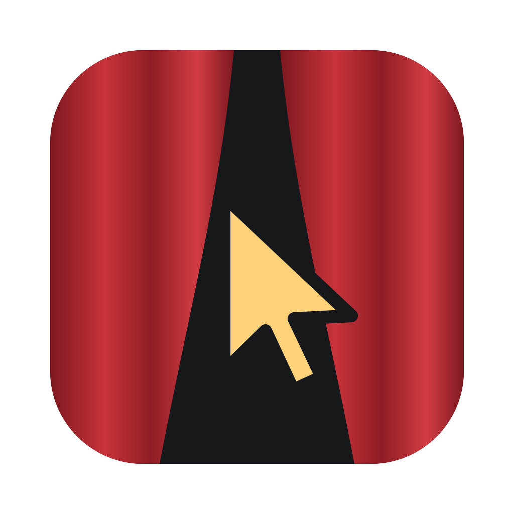

A project is a folder, usually a repository: Kulisa keeps its profiles, tasks and agents.
A profile is a separate browser profile, as in Chrome: its own cookies, storage, tabs and sign-ins. Sign in by hand in its pane; the agent in the terminal then uses it.
The agent reads this to choose the right profile for a task: who this is in your app, its role, what it can do. You can skip it: the agent will ask you when it needs to know, and save your answer here.
Show
The agent each new task of the project runs; Change agent… in a task's terminal picks another.
What the task is about. Its git branch takes the name too; its folder stays. The agent names it as well, once it knows.
The agent works in this task's terminal: it writes the code and uses the profiles. If it is not on this computer yet, Kulisa installs it with its maker's installer. On its first start it asks you to sign in.
The agents Kulisa can run in a task's terminal. Install one here; choose it for a task when you make one, or with Change agent… in the terminal's menu.